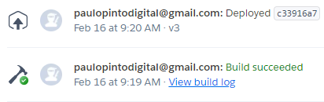
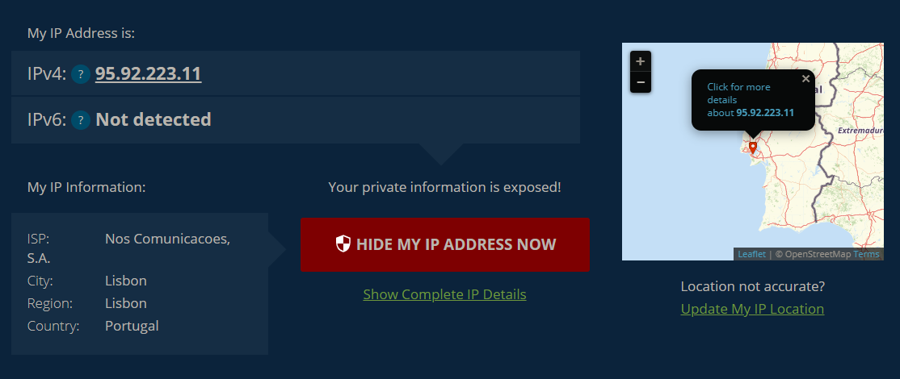
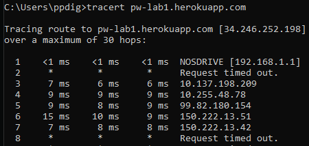
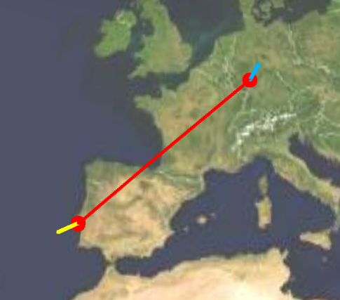
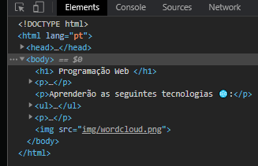
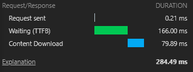
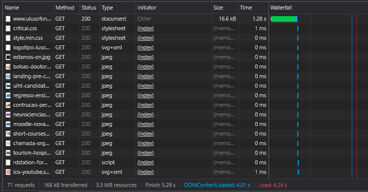

Relatório Paulo Pinto a21906966
Eis os passos que realizei para o 1º trabalho:
Criação do repositório e host (Heroku):
- Criei a pasta lab1 e o ficheiro
index.html, fiz download da imagem wordcloud.png
- Criei o repositório no Github
- Criei um projeto no Heroku e conectei ao repositório

- Criei os ficheiros
composer.json e index.php para o Heroku mostrar devidamente a página index.html
IP Lookup:
- Procurei o endereço do meu computador no website whatismyipaddress.com

- Executei o comando tracert na cmd e encontrei os "saltos" dados desde o meu computador até ao meu site

- Visualizei estes saltos no website geotraceroute.com

Seguindo para a inspeção no browser:
- Observando a tab Network encontramos uma tabela que mostra informações sobre os diferentes ficheiros que foram "buscados".
Informações estas como:
- o nome do ficheiro
- o método (GET ou POST)
- o estado (neste caso temos o 200 (sucesso) e o 404 (file not found))
- o initiator
- o tamanho do ficheiro
- o tempo demorado para ir buscar o ficheiro e no final um gráfico waterfall, que mostra o tempo que demorou cada ação que foi feita
- Request sent (é pedido o ficheiro)
- Waiting (tempo desde o request sent até ao ficheiro iniciar o download)
- Content Download (o tempo efetivo que demorou a fazer download)

- O preview mostra o ficheiro em questão, o timing detalha o gráfico waterfall e o header mostra outras informações relativas ao ficheiro em questão:

- Ao inspecionar a página inicial da Lusófona vemos que o site vai buscar bastantes ficheiros, e por isso demora mais tempo a carregar a página e o waterfall fica mais composto.
